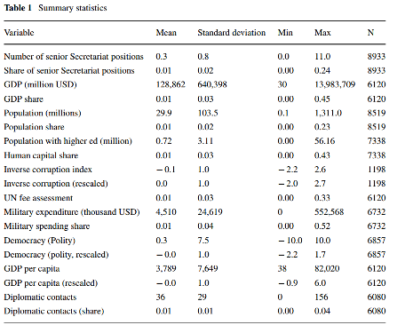
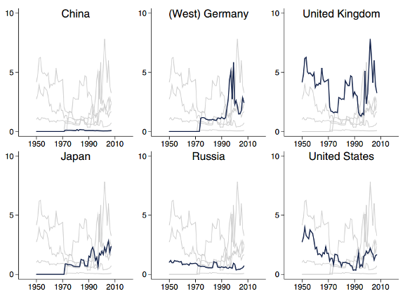
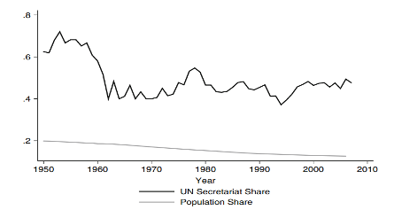

收录于合集

作品简介
【作者】 Paul Novosad，美国达特茅斯学院经济学助理教授，主要研究方向为发展经济学，政治经济学，公共经济等。Eric Werker，加拿大西蒙弗雷泽大学教授，主要研究方向为对外援助，非政府组织，政府间组织等。
【编译】 唐一鸣（国政学人编译员，北京大学国际关系学院研究生）
【校对】 杨帆，阮镇炜
【审核】 晋玉
【排版】 陈育涵
【美编】 黄竹音
【来源】 Novosad, P., Werker, E. Who runs the international system? Nationality and leadership in the United Nations Secretariat. Rev Int Organ 14, 1–33 (2019). https://doi.org/10.1007/s11558-017-9294-z
期刊简介
《国际组织评论》由德国施普林格科学与商业媒体集团每年发行四期，旨在发表与国际组织政策和结构相关的原创科学文献，侧重于实证研究。2018年该期刊的影响因子为1.763。
谁来运行国际体系？
联合国秘书处里的国籍和领导
Who runs the international system? Nationality and leadership in the United Nations Secretariat
Paul Novosad
Eric Werker
内容提要
各国政府经常试图让其公民担任国际机构的高层领导人。作者研究了过去60年中联合国秘书处高级职位人员的国籍，结果表明一些国家在这个零和博弈中获得胜利，其国家特征与国际机构中的权力相关。获得高级职位最多的是小而富裕的北欧民主国家。民主，对外交的投资，对外援助以及经济/军事力量是赢得高级职位的影响因素，即使在控制了联合国人员任命的个人能力和廉正标准后也是如此。此外，作者发现尽管美国的影响力有所下降，联合国秘书处相对于整个世界仍是亲美的。
文章导读
01
引言
国际组织在促进世界发展、维护国际安全方面发挥了重要作用，其高级职位竞争十分激烈，政府试图让其国民担任这些职位从而有利于实现国家利益。作者收集了联合国成立以来联合国秘书处最高级官员国籍的相关数据，分析了联合国秘书处人员控制权的决定因素以及美国在其历史上所起的作用，从而为衡量国家在国际机构中的权力提供新的方向。本文以联合国秘书处领导层为案例，探讨国家在国际机构中的相对影响力，作者认为秘书处领导者的国籍代表了时代变化下每个国家对联合国的影响。此外，通过确定秘书处中的职位分布情况，本文提供了一种客观衡量国家对国际机构的控制力的新方法。
作者研究了《联合国年鉴（1947-2007年）》中列出的每个高级官员的国籍，该名单确定了联合国秘书处每年大约80个最高级职位的担任者，并对国家进行排名，发现最高职位由富裕的民主国家主导：秘书处高级职位人数最多的五个国家是芬兰，瑞典，挪威，新西兰和爱尔兰。美国人数过多，而中国则严重不足。然后，作者建立多变量/多元模型以确定使各国有更多能力获得秘书处高级职位的因素，首先是联合国正式的雇用规则可能限制了某些国家。其次，还有经济产出，人均财富，军事支出，外交投资，对外援助支出以及民主程度等影响因素。其中，外交投资与国家在秘书处中的影响力呈显著的正相关关系，其他因素也呈正相关关系，但相对较弱。结果支持了国际机构反映全球权力的假说，还将该假说的范围扩大到军事力量之外：外交投资和对外援助是有回报的。接着，作者以此方法来描述美国对秘书处的影响。20世纪60年代以来，美国人担任高级职位的比例持续下降，但这些高级职位并没有被增长的中等收入国家所取代，而是被其他富裕民主国家（主要是联合国成立之初的美国盟友）的公民取代。作者认为，尽管该联盟在世界范围内的经济和军事主导地位不断下降，但联合国秘书处仍反映了以美国为首的联盟的利益。联合国秘书处不再代表美国的意识形态，美国对联合国的控制受到与其一同建立该机构的盟友的限制。
02
联合国秘书处的政治经济学
联合国是负责维护和平并促进国家间合作的主要国际组织，其执行机构是秘书处。它服务于联合国其他机构，协助调查研究，并与媒体和非政府组织等非国家行为体进行沟通。秘书处还负责管理维和行动，并设联合国政治事务部，在世界范围内采取积极行动。尽管联合国的决策权属于其审议机构（大会，经济及社会理事会和安全理事会），但秘书处在为这些机构设定议程方面起着关键作用。在实际操作中，秘书处的决策权超出了宪章规定。秘书处的工作人员表面上是国际公务员，为联合国的目标而不是其母国服务。但是，各国之间为使本国国民在联合国担任高级职位而进行的明争暗斗既说明了秘书处创造性权力的重要性，也说明了成员国普遍认为秘书处职员会继续维护其祖国的利益。
秘书长（Secretary- General）是联合国秘书处的负责人，由安理会提名、大会通过。副秘书长一般由秘书长任命、大会批准。秘书处其余的约43,000名工作人员由秘书处高级官员任命，无需通过审议机构。秘书处官员的任命遵循《联合国宪章》所述的两个标准：个人的效率、能力以及廉正；地域代表性。成立之初，联合国内部认为秘书处高级职位的选拔应参考其国家成员资格（即每个国家有最低职位数量）、人口和会费分摊（占比最大）。实际上，地域分配、配额限制的考量几乎只体现在人员的总体分布中，高级职位的国籍分配不成比例。在联合国成立初期，美国公民占秘书处所有高级职位的20-25％。其原因之一在于，总部设在纽约使其难以招募北美洲以外的国家公民。此外，许多国家缺乏受过良好教育和具有丰富经验的人才。
众所周知，最高职位的争夺会经过激烈的政治交锋。最初秘书长一职在主要地区轮换，但在一系列公民社会运动之后，秘书长的选拔采取了更加开放的程序，候选人要在联合国大会进行辩论和非正式对话。最终，来自葡萄牙的安东尼奥·古特雷斯在安全理事会的一致支持下出任秘书长，但仍然存在需要将其他高级职位授予俄罗斯和中国以作为交换条件的猜测。在任命前任秘书长潘基文时的影响力斗争更为典型，中国日益增长的全球影响力是从亚洲选拔候选人的重要因素。各国在其他高级职位上的竞争通常是公然的。冷战时期，副秘书长的选拔是各国冲突的舞台，经常纳入大会讨论，最后苏联推动形成透明的权力分工，三个副秘书长分别代表西欧，东欧和不结盟国家。这种划分使秘书处工作人员为本国效忠的意图更加明确，联合国也认识到了秘书处的政治化，并在其内部进行讨论。有越来越多来自其他领域的证据显示，官员的国家认同会影响机构的决策。
03
**
**
数据：建立秘书处职位的数据库
作者收集了秘书处官员的相关数据，包括姓名，职务以及国籍，并从1到6独立分配了每个职位的权重，秘书长的排名为6，副秘书长的排名为5，依此类推。同时，根据每个国家在给定年度中所占职位的份额，对其所占每个职位的重要性进行加权，以确定秘书处代表性的第二个衡量标准。在分析秘书处代表人数的决定因素时，作者还纳入其他几个变量，包括GDP和人口、受过高等教育的人数、世界治理指标（其中包括反腐内容）、民主的综合政体分数、国家军事开支及国家能力综合指数、国家年度驻外使馆数目、官方发展援助净额，以及联合国的会费评估。表1显示了所使用的所有测量指标的统计信息。

表1
04
谁来运行联合国？
4.1秘书处的代表性和超额代表性
作者将代表的标准参考点定义为每个国家都按其人口比例代表的情况，超额代表则是一国在联合国秘书处高级职位所占的份额与其全球人口所占份额之比，并将其视为衡量成员国每个公民在联合国中所享有的额外影响的指标。图1显示了美国、德国、英国、俄罗斯、中国和日本的超额代表情况。如上所述，在联合国成立之初，美国的职位占比过高，这一比例在20世纪80年代有所下降但随即保持稳定。二战结束后，日本和德国的代表人数很少，但其地位稳步上升，其超额代表在80年代超过了美国。苏联在联合国的代表人数几乎从未超额，部分原因是斯大林在早期试图破坏该机构，苏联解体导致俄罗斯在秘书处的影响力进一步下降。中国在联合国秘书处中的代表人数一直以来都很少并将继续保持该趋势，多年来平均仅占有1%的秘书处高级职位。

图1
图2显示了世界人口份额以及欧美国家（包括加拿大、新西兰和澳大利亚）在联合国秘书处职位中的份额。自联合国成立以来，西方国家在世界人口和国内生产总值中所占的比重一直在稳步下降，但它们对联合国秘书处的控制并未减弱。2007年，他们继续担任秘书处47％的职位，而在抽样期间，他们在世界人口中的份额从18％下降到12％。该图显示，尽管金砖四国等中等收入国家的国际地位有所上升，但欧美国家并没有失去对联合国中这一关键机构的控制权。

图2
表2列出了各国在秘书处多年来平均所占的超额代表。北欧国家占据了前6位中的4位，西方国家的任职人数过多，大型贫穷国家的人数明显不足；印度、中国和印度尼西亚的世界人口份额均比其秘书处职位份额高四倍或以上。（数据图详情请见原文）。小型民主国家（特别是北欧国家）的高排名与其经济区位有关，由于依赖外部因素，它们对负面冲击采取了额外的保险措施。这些国家倾向于建立民主的社团主义关系，拥有更大的政府以及对以安全为重点的国际组织进行战略投资。因此，开放的小型经济体想在联合国寻求更大的作用就不足为奇：对国际机构进行投资可能是它们获得全球影响力的最佳途径。此外，可能存在一种全球共识：北欧官僚会诚实公正行事。因此，北欧国家代表人数较高可能不是其施加权力的结果，而是其公正可靠声誉的结果。然而，在这些高级职位上占比较高使北欧国家有机会对国际机构行使权力，从而为本国谋利。而且，塑造其他国家偏好的能力是权力的一种表现，其他国家甚至可能没有意识到他们赋予北欧国家的权力。
4.2秘书处高级职位的决定因素
《宪章》规定了人员选拔的主要官方标准为效率、能力和廉正，而地域代表性是次要因素。作者研究了这三个主要标准在多大程度上可以解释秘书处的国籍分布。作者使用受教育程度（人力资本）衡量效率和能力，使用《全球治理指标》中的“免于腐败”衡量廉正，并在模型中纳入会费分摊和人口的变量。
结果显示，秘书处职位任命与其选拔标准的优先次序是一致的：高能力和廉正是联合国秘书处职员组成的解释变量。由于会费与GDP几乎完全相关，因此对会费评估的作用很难解释，该变量的重要性或解释为出资与领导权之间的一美元一票的关系，或反映经济实力作为控制国际机构的决定因素的重要性。
接着作者审查了联合国官方职位任命以外的因素的作用。斯通（Stone）等学者认为强国对国际组织施加了巨大影响。作者纳入了其他文献所描述的几种影响机制的相关变量，包括GDP，国家财富（人均GDP），军事总支出，国家的外交投资或其驻外使馆数量，国家发展援助预算以及国家民主程度。由于人力资本、军事开支、GDP和联合国会费具有高度的共线性（相互影响），这使得区分它们对因变量的影响变得困难。结果显示，当这些因素分别被纳入模型中时，它们与因变量（联合国秘书处代表性/职位份额）之间呈正相关且相关性的强度相似，统计学意义上的显著性十分微弱。外交再次成为单位国家在秘书处领导力跨时间变化的最有力解释变量，这表明对软实力的投资是联合国秘书处影响力的关键解释变量。民主，财富，对外援助和经济产出也与代表性相关，但其统计意义较弱。治理指标中的反腐败因素不再能解释各国在秘书处所占职位的份额，而各种衡量中立性的指标也不是秘书处影响力的重要解释变量，这削弱了对北欧国家获得成功的解释。
05
美国与联合国
作者将美国对联合国秘书处的控制作为案例，分析国家在国际机构中的权力。在联合国成立初期，美国占据了30％的秘书处高级职位，随后直至80年代，其职位份额稳步下降，在90年代略有恢复。西德和日本与其形成鲜明对比：二战后的最初20年中，他们在秘书处没有担任任何职务。但自70年代以来，这两个国家的影响力显著上升，其高级职位所占份额是其全球人口所占份额的两倍以上。
作者将国家偏好纳入考虑范围。各国可以组建联盟以促进共同利益，并宁愿让盟国担任高级职务而非竞争对手。如果美国失去的职位被其盟国接管，就可能夸大了美国在秘书处影响力的衰落程度。作者把联合国大会投票的相似性用于衡量国家偏好的相似性，因为这种衡量方法最能够衡量秘书处管理偏好的相关方面。作者假定，如果让对联合国决议有着相同偏好的、来自两个不同国家的公民担任秘书处的高级职务，那么他们将以同样的方式行事。结果显示，从1965年到1980年，美国人占据的职位数量有所减少，但是美国的同盟加权代表（alliance- weighted representation）保持不变，这表明美国失去的职位正在由美国的盟国填补。大约在1980年，美国在秘书处的同盟加权代表下降至负数，这表明秘书处中的高级官员平均来自反对美国的国家而不是美国的盟友。在1981年至2007年期间，秘书处的工作人员大多来自反对美国的国家而非美国盟友，这在克林顿政府时期略有回升，而在随后的布什时代则单调下降。
对秘书处的联盟加权控制的变化可能是由秘书处职员组成变化或国家之间的偏好相似性变化引起的。当把“联盟”控制为常量时，美国的影响力几乎没有衰落，这表明美国失去的职位都由其50年代的盟友接管。当这些盟友不再与美国共享意识形态时，美国在联合国的影响力呈下降趋势。因此，美国影响力的下降是美国与其盟国之间的偏好差异导致的，这也许是受国内政治趋势影响。这些结果表明，在战后60年中，除了美国影响力下降外，联合国的战后控制平衡在很大程度上是静态的，尽管特定国家在联合国中的影响力和全球经济实力平衡都发生了巨大变化。联合国是由西方国家建立的，秘书处从建立伊始就一直由它们领导。
-–测量机构偏向
从1950年至今，美国对联合国秘书处的控制权持续下降，秘书处中的高级官员大多来自反对美国的国家，但秘书处相对于世界来说仍然有可能亲美国。作者对机构中存在的偏向进行衡量，将机构对国家的偏向定义为国家对该机构的影响力与该国与世界其他地区的偏好相似性之间的差值。结果显示，相对于整个世界，联合国秘书处一直偏向美国。尽管美国越来越孤立，但联合国秘书处的领导与美国的关系相较于世界整体更紧密。作者还分析了20世纪70年代和80年代初联合国教科文组织（UNESCO）的官僚领导情况，这是美国在1984年退出的第二个联合国机构。UNESCO秘书处对组织的立场及偏向发挥决定性作用。结果显示，联合国秘书处要比联合国教科文组织更亲近美国。
06
领导人国籍是衡量国际机构中国家权力的手段
寻找能够客观衡量各国权力大小的努力至少可以追溯到18世纪。基于能力的衡量愈加复杂，美军使用克莱恩公式（Cline’s formula）来评估国家能力的长期趋势。
基于能力的方法受到了许多学者的批评，他们认为权力根据具体情况表现不同，它是关系性的，因此不能被客观测量。学者对不同类型的权力进行描述和分类，除了最初的强制力定义外，还包括制定议程的能力和影响他者最初偏好的能力。最近，巴内特（Barnett）和杜瓦尔（Duvall）提出了权力的第四种类型，即制度性和生产性权力（Institutional and Productive Powers）。对国际机构人员任命的控制权更接近此类定义：首先是通过行为者在机构中的分散互动来控制行为者的能力；其次是影响“广泛社会范围中的知识体系和话语实践体系”的能力，这是对秘书处全球议程设定作用的合理描述。战争的结果提供了有关交战国军事能力的信息。作者认为争夺国际机构领导权的外交斗争的结果类似地提供了竞争国家影响这些机构的潜在能力的信息。斯坦伯格（Steinberg）指出，“外在”于国际组织规则的国家权力能无形地影响组织的决策过程，这产生了不平等的结果。作者提出了一种新的客观衡量在国际机构中的国家权力的方法：国家在国际机构关键决策角色中所占的份额。这种方法专注于国家在国际机构中的权力，衡量标准仅与国家所感知到的控制国际机构的重要程度有关。因此，这种方法能够同等准确地衡量几乎所有国家，并且可以观察到其随时间变化的情况。
联合国秘书处领导权作为一项权力衡量标准的主要弱点是，各国对联合国的重视程度不同，因此一些国家将为确保该组织的高级职位付出较少的努力。虽然秘书处是国际体系中最具代表性的中央机构之一，但显然并非每个国家都投入相同水平的资源来使其国民担任关键职务。因此，该衡量方法是影响国际成果的意愿和能力的结合。然而，可以以较低的成本获得这些职位的国家被认为更具实力，并且在其他所有条件相同的情况下，也有可能获得更多的职位。联盟加权衡量指标作为权力指标的第二个可能的不足之处是，它会将相等的权力赋值给偏好非常相似的小国和大国。Moravcsik认为，政府间谈判的结果取决于偏好和讨价还价能力以及它们之间的相互作用方式。与大国具有相似的偏好将使小国可以将重点放在其更偏好的领域，因此这可能不是一种缺陷。
最后，作者利用该方法分析美国力量是否正在下降。二战后，美国构建了国际体系，试图建立由美国主导的经济和安全秩序，并计划与其他遵从美国世界观的国家共享这些机构。尽管这种观点在冷战年代似乎是合理的，但在近期的国际事务中，“欧美联盟”的概念并不那么明显。在国际组织中，美国经常与欧洲国家产生严重分歧，美国越发倾向单边主义，而欧洲人倾向多边主义。作者对秘书处代表性的衡量表明，即使控制了盟国所担任的职位这个变量，美国在联合国秘书处担任的高级职位也比以前少，影响力也有所下降，因此秘书处不再是美国的囊中之物。秘书处一如既往地支持西方，但权力平衡并非完全静态：现在是美国的前盟友控制着该机构，而不是美国自身。
07
结论
1946年，联合国第一任秘书长由挪威人担任，部分原因是苏联强烈要求该职位应交由非西方阵营的国家公民担任。此后，北欧国家继续占据着联合国的大多数高级职位。联合国的官僚机构倾向于与北欧国家保持一致的意识形态，这绝非偶然。在某种程度上，国际机构限制了国家的行动，这可能使北欧国家拥有大于其经济或军事实力所代表的更具影响力的国际地位。
作者认为，具有更大能力影响国际组织的国家在推动其国民担任高级职位方面将更为成功，这是国家权力的重要方面。对双边外交，乃至更小程度的对外援助进行投资的国家和民主国家最能有效地将其国民安排在秘书处。这表明通过多边机构行使影响力可能是对通过双边软实力行使影响力的补充。作者还考虑了国家之间的共同偏好，通过研究美国的联盟加权代表，作者发现自联合国成立以来，尤其是自1980年以来，美国的影响力持续下降，而美国与其50年代盟国之间意识形态的差异扩大是其关键因素。但是，与整个世界的利益偏好相比，秘书处仍然偏向于美国。
译者评述
本文利用国际组织中高级官员的国籍来研究国家间权力竞争的方法较为新颖。这种方法可应用于拥有足够高级官员的各个国际组织，并为研究国家如何在国际组织中发挥影响力和国际组织内部官僚运作提供新的思考。近年来，中国的国际影响力虽然有所上升，但在国际组织中的代表性、影响力相较于欧美日仍然存在差距。
文章观点不代表本平台观点，本平台评译分享的文章均出于专业学习之用, 不以任何盈利为目的，内容主要呈现对原文的介绍，原文内容请通过各高校购买的数据库自行下载。